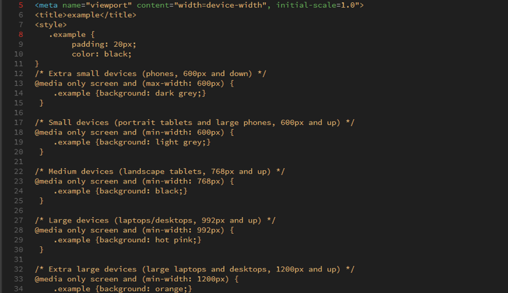

Responsive Web Design
Supporting Mobile, Web, and Tablet devices
In today's busy, connected world, access to the Internet has become a necessity in many places. We use it at work, school, home and depending on where we are using it, the device we are on might change. We have large screen desktop computers, medium screen laptops, smaller screens on tablets, and even smaller screens on mobile devices. When creating a website, it is imperative that this is taken into account.
That is where responsive web design comes into play. A responsive webpage will automatically adjust depending on what type of device you are using to view it. For instance, on a large screen, everything on a webpage could potentially be visible in one hemisphere but when viewed on a mobile device, that same webpage will be laid out differently. Instead of things being in one line, they may be stacked. Some aspects of the page, like images, may be hidden completely.
Since users can do everything from finding information to checking in virtually with family to ordering groceries online and have them delivered from phones, having a website that adjusts for mobile use will make the web accessible to people with smaller screens. One of the ways that designers are handling this is to design for mobile first. You can do this with HTML and CSS.
Let’s start with the viewport. You want to set this so that the page is scaled properly on any device. Use the following <meta> tag in your webpages:
<meta name=”viewport” content=”width=device-width, initial-scale=1.0”>
This tells the browser how to control the page.
Next with CSS, you can create media queries that will allow the design to change with the size of the viewers screen. Since the goal is to design mobile first, the media query needs to state to change the design when the screen gets larger. This can be done by using “min-width” instead of “max-width”. Here is a list of 5 typical breakpoints, taken from W3Schools:
Once you have created these media queries, you can then style the page to hide certain elements at different levels, change font sizes, colors, or any number of things. Remember, making a responsive site allows users more freedom and they are less likely to leave the site because of design issues.